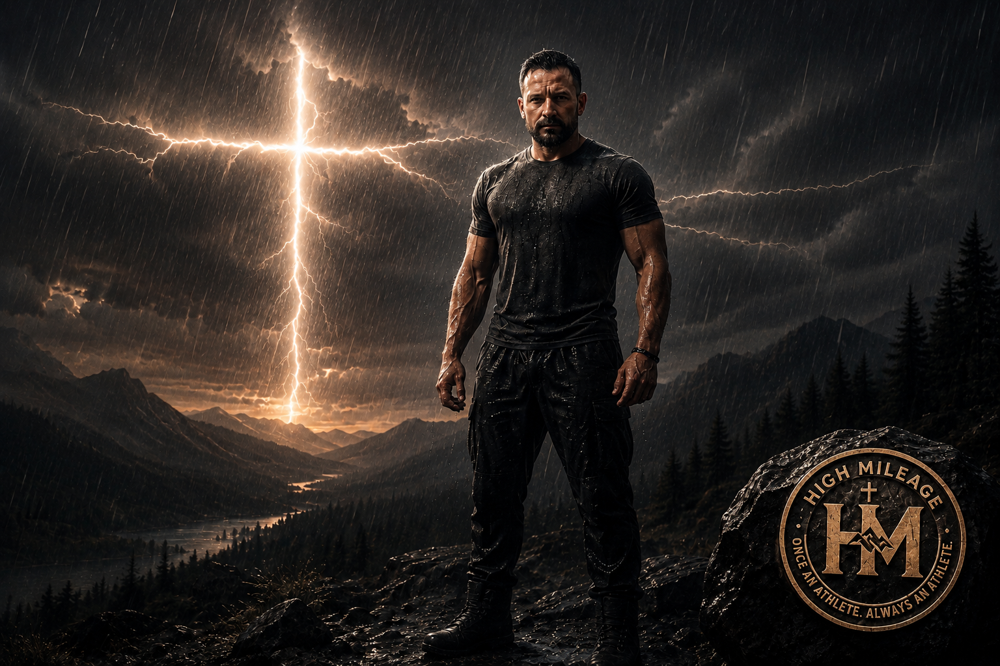

01
CAPABILITY
STRENGTH
BUILD WHAT LASTS.
Preserve muscle. Develop usable strength. Maintain the physical capacity to work, compete, protect, provide and live fully.

STRENGTH • PERFORMANCE • RECOVERY • FAITH
ONCE AN ATHLETE. ALWAYS AN ATHLETE.
For athletes, former competitors, first responders, and anyone who refuses to believe capability has an expiration date.

THE HIGH MILEAGE BELIEF
Your body is resilient—designed to move, compete, adapt and remain strong. The work may change as the miles add up. The opportunity to improve does not disappear.
THE HIGH MILEAGE METHOD
THE ATHLETE IS BUILT ON MORE THAN STRENGTH.
The miles change you. The standard remains. Build strength. Preserve performance. Respect recovery. Know your purpose.
CAPABILITY
BUILD WHAT LASTS.
Preserve muscle. Develop usable strength. Maintain the physical capacity to work, compete, protect, provide and live fully.
READINESS
STAY CAPABLE.
Strength alone isn't enough. Move well. Maintain power, conditioning, mobility, speed and the ability to perform when life demands it.
RESILIENCE
RESPECT THE MILES.
Train intelligently. Recover deliberately. Adapt through setbacks, rebuild capacity and keep moving forward for the miles ahead.
PURPOSE
STRENGTH HAS A PURPOSE.
Stewardship. Discipline. Perseverance. Restoration. Faith gives direction to the work and reminds us why capability matters.
FOUR PILLARS. ONE STANDARD. STAY CAPABLE.
WHY HIGH MILEAGE EXISTS
High Mileage was built from a lifetime spent competing, coaching, strength training and serving in a profession where physical and mental performance can matter without warning.
Its founder has competed at the college level, coached athletes for more than two decades, strength trained for 25 years, and spent more than two decades in law enforcement—including tactical, leadership and fitness-coordination roles.
Then came a major Achilles injury. Becoming the athlete rebuilding made the mission even more personal: capability is worth fighting for, and rebuilding is part of remaining an athlete.
READ THE FOUNDER STORY →THE FOUNDER STORY
Soccer was the primary sport—leading to two Missouri All-State selections and collegiate competition. Athletics, competition and learning new sports have remained a constant throughout life.
More than 20 years coaching athletes from youth to semi-professional levels, alongside more than 25 years of strength training and broad experience across athletic development.
More than 22 years in law enforcement, including narcotics, task-force supervision, SWAT operations and leadership, patrol supervision, and 12+ years as a departmental fitness coordinator with FLETC certification.
After years of good health, a torn Achilles in 2026 created a new challenge: rebuilding athletic capacity. High Mileage is being built while that journey continues.
PERFORMANCE WITH PURPOSE
A shift can move from routine to maximum effort without warning. Sprinting, fighting, pursuing, lifting, recovering and making rapid decisions under stress are real occupational demands.
High Mileage will explore practical ways to build physical readiness and resilience for people whose work may demand performance at any moment.
COMING ONLINE
Practical conversations about training, performance, recovery and faith.
Long-form thoughts, lessons and resources for the High Mileage athlete.
Guides, tools and training resources designed for the miles ahead.
JOIN THE JOURNEY
Follow High Mileage as the platform launches and the conversation begins.
Replace these placeholders with the official secured profile URLs before publishing.THE FOUNDATION
High Mileage is informed by 1 Corinthians 6:19–20 and 1 Peter 5:10. Faith is not separate from the journey—it helps give the journey direction.
“Take care of yourself so you can take care of others. Lead by example. Pull others with you.”